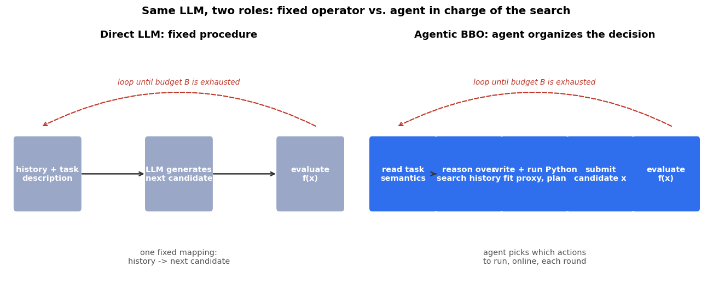
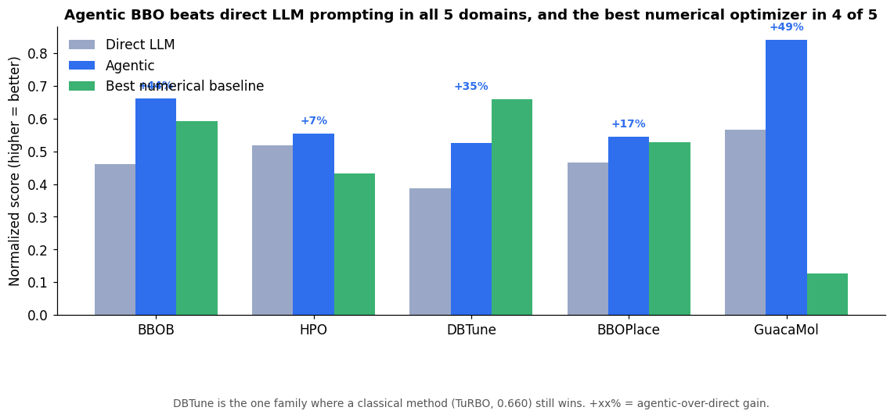
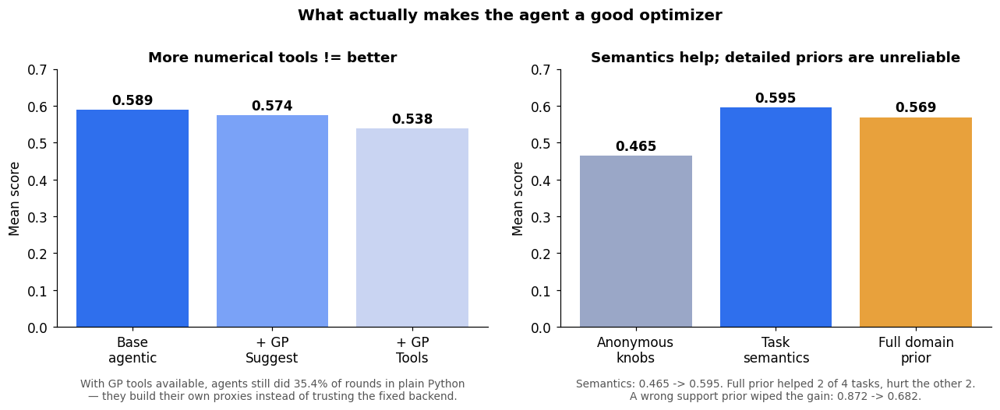
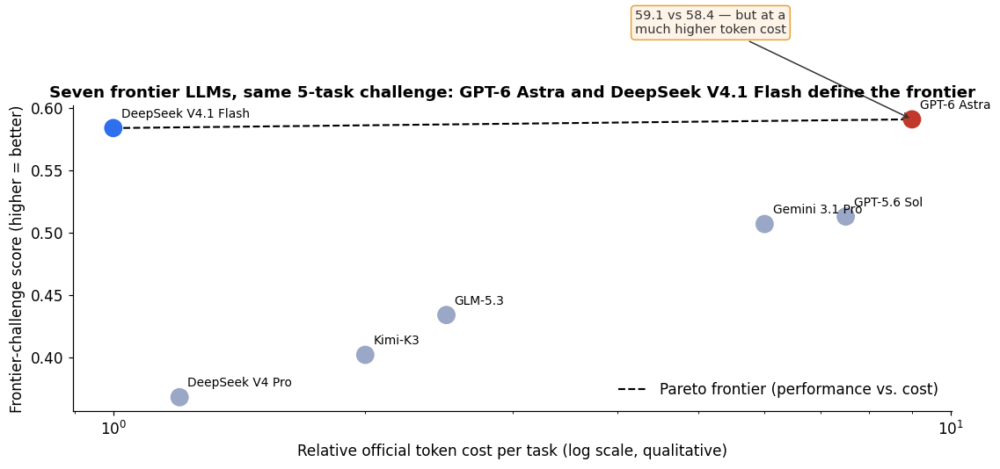

For thirty years, black-box optimization has belonged to the numerical people. Gaussian-process Bayesian optimization, CMA-ES, TuRBO — fixed mathematical machinery that treats your problem as numbers in, numbers out, and finds the best configuration in a few hundred tries. The reign is ending. A new benchmark from Nanjing University's LAMDA group, AgenticBBO-Bench (arXiv:2610.12183, Oct 8, 2026), put LLM agents against those classical optimizers across five domains — and the agent won 4 out of 5.
The headline number: on molecular design (GuacaMol), the agentic approach scored 0.840 where direct LLM prompting managed 0.565 — a +48.7% relative jump. On synthetic benchmark functions, 0.460 → 0.661 (+43.7%). Averaged across all five families: +30.3%. And it beat the best classical numerical optimizer in four of the five domains. The fifth — database tuning — still belongs to TuRBO (0.660 vs the agent's 0.525), which is itself the most interesting part of the story.
The ELI5 version
You have 40 guesses to find the best settings for a database. Each guess costs you a real benchmark run — time and money.
The old way: a math formula picks each guess. It knows nothing about what the knobs mean. It sees "knob 7 = 0.42, score = 0.81" and fits a curve.
The direct-LLM way: you hand the LLM the history and ask it to guess the next settings. One shot per round. No tools, no reasoning trace, no plan. This is the "AI writes your emails" brain doing optimization. It works a little. Barely.
The agentic way: the LLM sits in a workspace with a Python terminal. Before each expensive evaluation, it can read the task description ("this knob is the PostgreSQL shared-buffers setting"), analyze the search history, write and run its own analysis scripts, fit its own proxy models, and decide online what to do next. The optimization procedure isn't prescribed anymore — the agent organizes it.
Same LLM, three roles. The only difference is the harness. (Regular readers will notice this is the same lesson as my agent-harness post: the harness, not the model, decides what your AI can do.)

What the benchmark actually ran
AgenticBBO-Bench puts five established optimization domains under one finite-budget protocol — same budgets, same scoring, matched initializations:
- BBOB — synthetic math testbeds (the ones every optimizer is graded on)
- HPO — hyperparameter tuning of SVMs and random forests (Bayesmark)
- DBTune — PostgreSQL and Sysbench configurations
- BBOPlace — chip macro placement (yes, arranging blocks on a chip)
- GuacaMol — molecular design (searching chemical space for useful molecules)
The agent under test: DeepSeek V4.1 Flash as the backbone, running in a Codex harness with Bash/Python and structured search-state access. The "Direct" baseline: same model, given the task description and history in context, generating the next candidate directly. The numerical baselines: GP-BO, TuRBO, CMA-ES, TPE, plus domain specialists (Graph-GA for molecules).
The results, normalized so higher is better:

Agentic beats Direct everywhere — +43.7% on BBOB, +48.7% on GuacaMol, +30.3% average. Against the classical optimizers, it takes BBOB (0.661 vs TuRBO's 0.592), HPO (0.554), chip placement (0.544), and molecular design (0.840 vs Graph-GA's 0.054 — the domain specialist isn't even close). TuRBO holds database tuning. This is not "LLMs are okay at optimization." This is a general-purpose agent beating domain-tuned numerical methods in four of five arenas.
The state of the art: three findings that rewrite the playbook
Finding 1: More tools ≠ better. More semantics = better.
The team ablated the agent's setup three ways, and the results are the kind that should make you redesign your agent stack:
- Bolting a Gaussian-process suggestion tool onto the agent: mean score 0.589 → 0.574. Adding the full GP toolkit (surrogate predictions, acquisition scoring, diagnostics): → 0.538. Every extra numerical tool made the agent worse on average.
- Giving the agent task semantics (what the knobs actually mean): 0.465 → 0.595. Broadly useful, every task.
- Giving it detailed domain priors: 0.595 → 0.569 — helped on two tasks, hurt on two. And a prior with the wrong support region wiped the gain entirely (0.872 → 0.682).
The mechanism is delicious: with GP tools available, agents still did 35.4% of rounds in pure Python and 17.4% mixing both. They don't hand the search to the fixed optimizer — they write their own task-specific analyses. The paper's Bigblue1 case study shows the agent fitting a linear proxy from observed chip layouts, constructing a new placement from the learned pattern, and driving the score from 0.551 → 0.664 in four evaluations. The fixed GP has a fixed inductive bias; the agent discovers the bias that fits this problem.

Finding 2: The hybrid pattern is the practical sweet spot.
Where should the LLM act in the loop? Three options tested: full online agent, agent-then-handoff to a numerical optimizer, and restricting the LLM to merely controlling a GP policy. Scores: online agentic 0.569, agent→TuRBO handoff 0.570, GP-policy control 0.516, cold TuRBO 0.475.
Read that again: hand the search to TuRBO after an agent warm-up and you match the full online agent. The agent's value is front-loaded — it establishes the promising search trajectory with its semantics and reasoning; the numerical optimizer then absorbs those gains and converges with precision. You don't need the LLM online for the whole run. Run the agent for the first half, hand off to cheap classical machinery for the second, and keep all the performance while cutting inference cost.
Finding 3: The frontier leaderboard has a surprise — and a pricing lesson.
A compact five-task challenge (one representative task per domain) was run for seven frontier models under the same Codex harness. GPT-6 Astra tops it at 0.591, but DeepSeek V4.1 Flash is right behind at 0.584 — and the two sit on the Pareto frontier of performance vs. cost. The paper's words: "models at very different price points can achieve similar aggregate scores," and "simply moving to a more expensive frontier model does not remove the need for better agent design."
The spiciest row in the table: DeepSeek V4 Pro scores 0.368 — dead last among the seven, far behind its own Flash sibling at 0.584, and below the plain GP reference (0.493). Bigger model, worse optimizer. No model dominates every domain. Optimization behavior is not a capability ladder you climb with scale; it's a different skill, and the harness plus the search strategy matter more than the parameter count.

What this means for you (the hands-on part)
You don't need a chip-design lab. The pattern ports to anything where trying something costs time or money and you can't differentiate your way to the answer: hyperparameter tuning, prompt search, pricing experiments, ad-budget allocation, A/B test design. The recipe, straight from the paper's findings:
- Write down the black box: the knobs, their ranges, and exactly how one try gets scored.
- Set a finite budget (the paper's protocol is built on this) — the agent must earn every evaluation.
- Seed with semantics, not machinery: a paragraph describing what the knobs mean. Per the ablation, this helps more than any extra optimizer tool.
- Let the agent explore first, then hand off: run the agent for the first half of the budget, then give the trajectory to a classical optimizer (BO/TuRBO) for final precision. 0.570 ≈ 0.569 — you keep the performance, shed the token cost.
- Distrust detailed priors: expert knowledge that is slightly wrong about where the good region is performs worse than none at all (0.872 → 0.682).
The companion notebook replays all three mechanisms on a cheap 5-D multimodal toy: agentic beats random search and direct guessing (asserted, 8 seeds), agent warm-up + numerical handoff beats the cold numerical optimizer, and task semantics beat anonymous knobs while a wrong prior wipes the gain. All paper tables reproduced as reference.
Code for the real thing: github.com/lamda-bbo/agentic-bbo. Paper: arXiv:2610.12183 — Chen, Tan, Xue et al., Nanjing University.
Takeaways
- Agentic BBO beats direct LLM optimization in all 5 benchmark domains (+30.3% average) and beats the best classical numerical optimizer in 4 of 5 (TuRBO holds database tuning at 0.660).
- Semantics > tools: task descriptions lift the agent 0.465 → 0.595; extra GP tools lower it 0.589 → 0.538. Agents write their own proxies instead of trusting fixed backends.
- Detailed priors are unreliable — a wrong prior nearly erases the semantic gain (0.872 → 0.682).
- The winning deployment pattern: agent explores, numerical optimizer exploits (handoff 0.570 ≈ online 0.569, way above cold TuRBO 0.475).
- On the frontier challenge, GPT-6 Astra (0.591) and DeepSeek V4.1 Flash (0.584) define the performance-cost Pareto frontier — while the bigger DeepSeek V4 Pro finishes last at 0.368. Scale is not an optimizer.